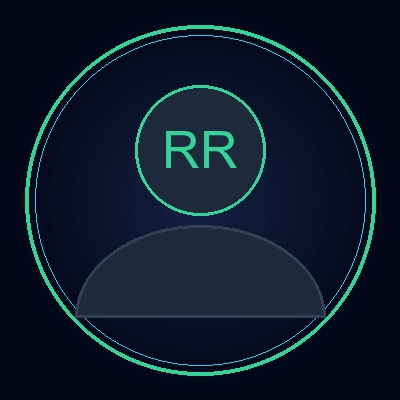

Raffi Ramadhan
Web Developer & UI/UX Enthusiast
Saya adalah mahasiswa Sistem Informasi yang tertarik pada pengembangan website dan perancangan antarmuka pengguna. Berkomitmen mengembangkan solusi digital fungsional serta terus mengasah kemampuan melalui pembelajaran dan komunitas koding.

Mahasiswa Sistem Informasi & Pegiat Komunitas Koding
Halo! Saya Raffi Ramadhan, mahasiswa Program Studi Sistem Informasi Semester 3 di Universitas Nusantara PGRI Kediri.
Perjalanan saya di dunia teknologi didorong oleh rasa ingin tahu yang mendalam pada pengembangan website dan perancangan UI/UX. Saya meyakini bahwa antarmuka terbaik adalah perpaduan harmonis antara logika kode yang tangguh dan estetika visual yang memudahkan setiap pengguna.
Melalui keikutsertaan aktif di SIKOKI (komunitas koding), saya secara konsisten mengasah kemampuan teknis, berkolaborasi dengan sesama pembelajar, dan membangun fondasi yang kokoh untuk persiapan karier profesional di bidang web development.
Pendidikan Formal
S1 Sistem Informasi (Semester 3)
Universitas Nusantara PGRI Kediri
Komunitas Koding
Anggota Aktif
SIKOKI (Sistem Informasi Komunitas Koding)
Fokus Profesional
Front-End Development & UI/UX
Desain responsif, kode semantik, dan perancangan antarmuka pengguna modern.
HTML5 Semantik
Struktur dokumen yang rapi, semantik, ramah SEO, dan berorientasi aksesibilitas standar.
CSS3 & Tailwind CSS
Utility-first workflow, layout Flexbox & CSS Grid, palet warna elegan tema gelap modern.
Vanilla JavaScript
Manipulasi DOM murni, event handler dinamis, navigasi responsif, dan interaksi tanpa bloatware.
UI/UX & Figma
Wireframing, perancangan antarmuka, konsistensi hierarki visual, dan pembuatan prototipe interaktif.
Git & GitHub Pages
Version control, manajemen branch, repositori kolaboratif, dan publishing website statis tanpa server.
Responsive Design
Tata letak adaptif yang nyaman digunakan pada layar ponsel, tablet, laptop, hingga monitor ultra-lebar.
Sedang Dipelajari (Tahap Eksplorasi)
React.js
Komponen & state
PHP & MySQL
Backend & database
RESTful API
Integrasi data JSON
Fondasi Kode Semantik & Estetika Antarmuka
Setiap keahlian yang tercantum mencerminkan kompetensi teknis yang secara nyata dipelajari dan diimplementasikan. Pendekatan saya berpusat pada penulisan kode yang bersih, efisien, dan mudah dipelihara.
Melalui kombinasi HTML5 semantik, kecepatan utility Tailwind CSS, kelincahan Vanilla JavaScript, serta riset UX melalui Figma, saya terus memperluas kapasitas sebagai developer web modern yang adaptif.
Kurasi Proyek & Eksplorasi Digital
Bagian ini disiapkan secara khusus untuk mendokumentasikan karya-karya terpilih yang dihasilkan dari penugasan akademik Sistem Informasi UNP Kediri serta proyek kolaboratif di komunitas koding SIKOKI.
Setiap proyek nantinya akan dilengkapi dengan ringkasan masalah, peran pengerjaan, teknologi yang digunakan, serta tautan repositori GitHub dan demo langsung.
Karya SIKOKI & Studi Kasus UI/UX
Mencakup purwarupa antarmuka web, website organisasi, serta modul aplikasi interaktif yang sedang dirancang bersama komunitas.
Terhubung Lewat Komunitas
Untuk pertanyaan, kolaborasi antarmahasiswa, atau diskusi proyek, koordinasi awal dapat dilakukan melalui forum komunitas koding SIKOKI.
Mari Berdiskusi & Jalin Kolaborasi
Saya selalu terbuka untuk berdiskusi seputar eksplorasi web modern, kerja sama proyek komunitas, serta peluang magang industri di bidang pengembangan web dan perancangan UI/UX.
Integrasi formulir interaktif dan profil profesional (LinkedIn & GitHub) akan difinalisasi pada Tahap 3 sesuai roadmap pengembangan produk.